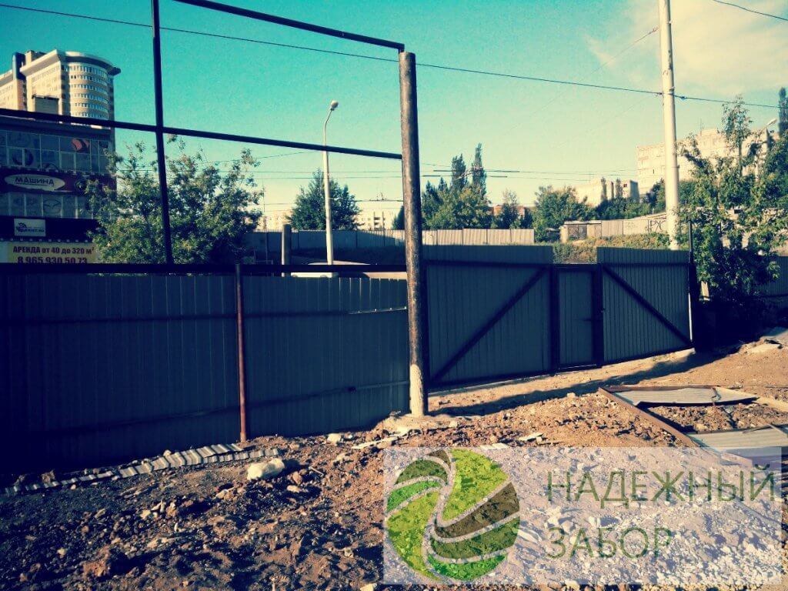
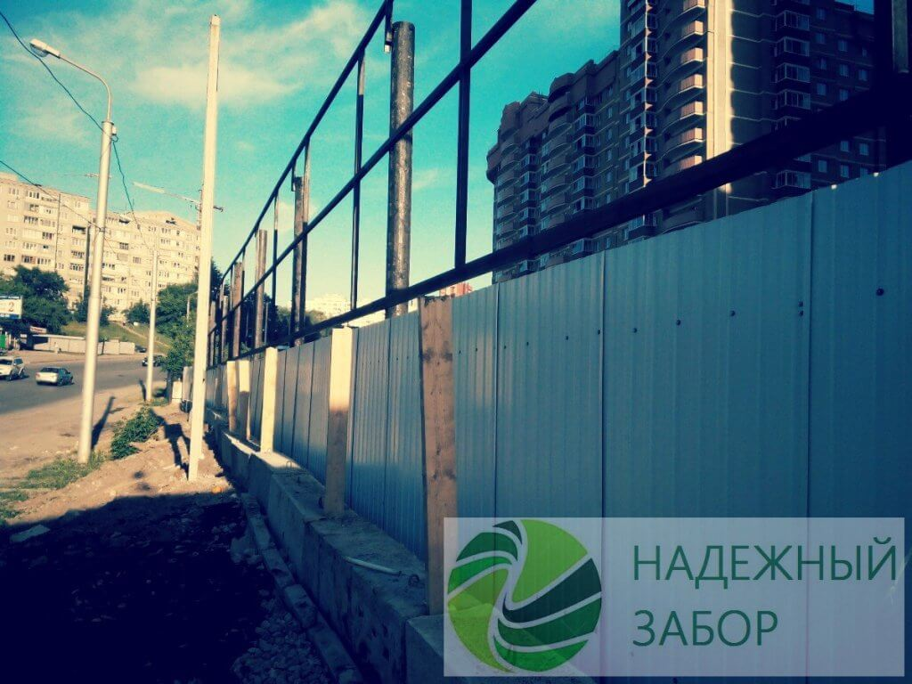

Строительные ограждения в Уфе – это один из вариантов забора, который устанавливается на непродолжительный период.
Мы предлагаем купить в Уфе строительные ограждения. Сферами использования таких переносных оград являются:
- строительные и ремонтные площадки;
- места проведения массовых акций и спортивных соревнований;
- территория осуществления спасательных мероприятий.
- Из нашего опыта, в Уфе применение строительных ограждений сводится к последующим позициям:
- ограждения строительной площадки;
- разделение складских участков;
- ограждение монтажных работ;
- ограждение пуско-наладочных работ;
- ограждение котлованов;
- ограждение участков культурно-массовых мероприятий;
- ограждение временных стоянок автотранспорта;
- ограждения дорожных работ.
Строительные ограждения в Уфе и Башкирии временного типа
Обычно строительство объектов начинается с комплекса работ по подготовке стройплощадки. Для этого производятся все необходимые расчеты, сверка с планом коммуникаций, проектные работы. Немаловажным фактором в этой подготовке является ограждение строительной площадки.
Наша компания «Надёжный забор» производит и устанавливает несколько видов временных строительных ограждений и мы рады предложить сотрудничество всем заинтересованным лицам. Работаем и по наличной и безналичной форме оплате по договору. У нас вы можете заказать возведение фальшфасадов, которые позволяют целиком закрыть фасад объекта строительства, а это важно для объектов в историческом и деловом центре Уфы. Например, такой фальш фасад нами смонтирован по улице Бакалинской. Рядом с домом номер 19. Ниже представлена фотография этого объекта. Такая конструкция представляет из себя металлический каркас, проектируемый индивидуально под каждый объект. Снизу такой каркас крепится с помощью железобетонных блоков. Для декорирования каркаса металлическое основание обтягивается баннерным полотном с фотопечатью, на котором изображен внешний вид реального здания. По периметру фальшфасада, снизу, устанавливается стандартный забор из профнастила высотой 2-3 метра. Фальшфасад может быть оборудован дополнительной подсветкой, а также иметь пешеходную галерею.
Наиболее показательным в данном случае, будет служить пример из нашего портфолио: фальшфасад для офисного здания по адресу: г.Уфа, Бакалинская 19.

Строительное ограждение в Уфе, по ул. Бакалинская, 19
Городское строительство в Уфе с каждым годом набирает обороты. Появляется все больше новых жилищных комплексов, общественных зданий, загородных поселков, торговых и бизнес-центров. При проведении строительно-монтажных работ ограждение стройплощадки должно предусматриваться в обязательном порядке. Это позволяет защитить прохожих и проезжающие автомобили от внезапного падения строительных материалов, а так же обеспечит порядок на строительном участке. Ограждение строительного участка – это забор, изготовленный с применением различных материалов: сетки рабица, бетона, профнастила или дерева.
Все ограждения строительных площадок в Уфе, купить которые вы можете в нашей компании, делятся на временные заборы для стройплощадок и разовые ограждения.
Применяя ограждение для строительных площадок, Вы сможете:
— защитить территорию строительства от несанкционированного проникновения посторонних лиц;
— сохранить строительные материалы и оборудование в целости и сохранности (без воровства и порчи имущества);
— обеспечить защиту жителей города от возможных ЧП в районе проведения строительных работ.
Достоинства ограждений временного типа
К основным преимуществам такого отделения участка относятся:
- Оперативная и несложная установка, демонтаж. Конструкции обладают небольшим весом, оснащены удобными креплениями, при помощи которых ограждения устанавливается за пару мгновений, без применения спецтехники;
- Не требуют предварительных строительных работ. Все секции оснащены устойчивыми основаниями. Забор может монтироваться на любой тип поверхности без проведения бетонирования, рытья ям и траншей;
Из чего изготавливаются строительные ограждения?
Мы предлагаем своим клиентам непостоянные ограды в виде металлических переносных секций. Рама и опора выполнены из профильной трубы сечением 20 или 25 мм, внутри смонтирована сварная сетка 100х100 мм. По обеим сторонам секции приварены элементы (крючки и зацепы) замкового соединения, прочно крепящиеся меж собой.
Просвет от нижней планки до земли составляет 15 см. Длина каждой детали составляет 2 м. Стандартно их размеры в высоту составляют 1,6м или 1,1м.
Купить ограждения стройплощадок, цена которых Вас устроит, Вы сможете на нашем сайте. Мы являемся прямым поставщиком ограждений для стройплощадок в Уфе и других городах, поэтому цены предлагаем более чем умеренные. Наш менеджер грамотно и профессионально рассчитает стоимость ограждения стройплощадки конкретно для Вас.
Здесь Вы можете ознакомиться с прайс-листом на временные ограждения. Точную стоимость рассчитает наш менеджер после вашей заявки.
Остались вопросы, звоните по телефону: +7 (347) 292-77-55.